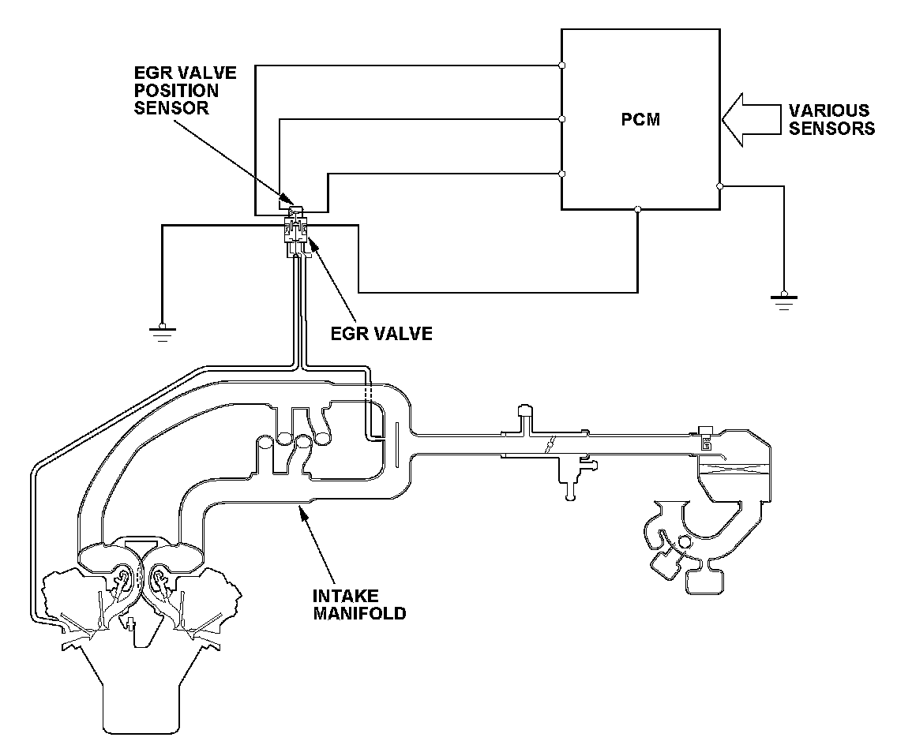
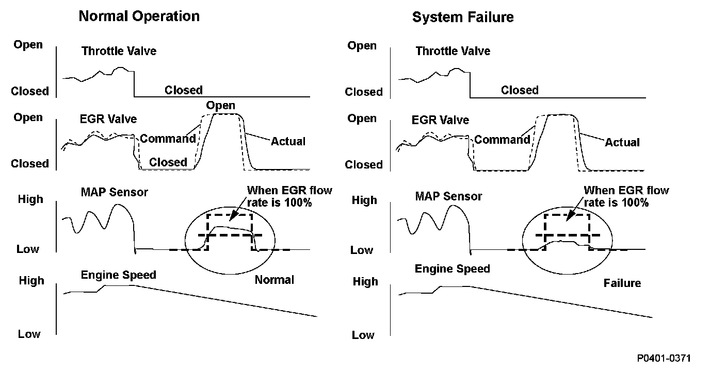
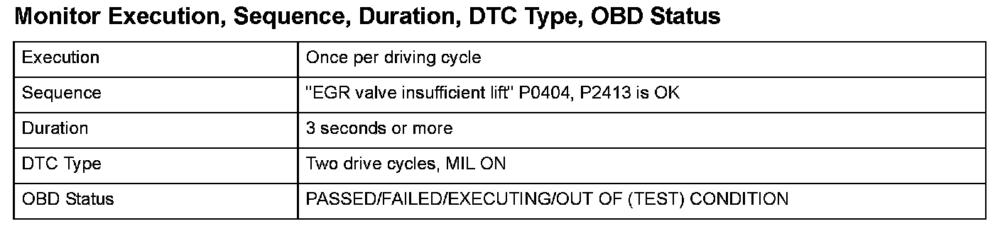
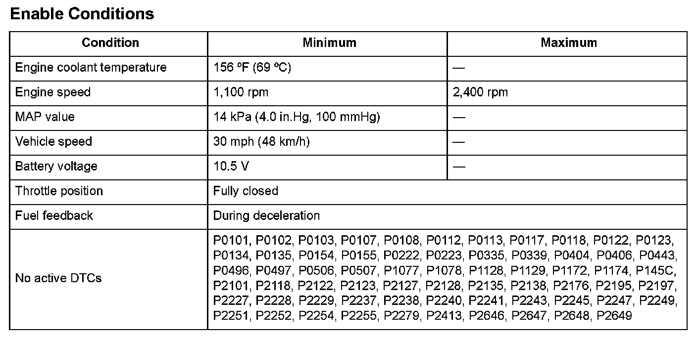
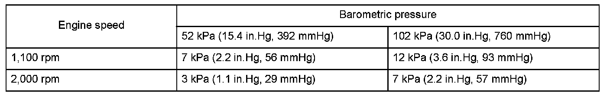
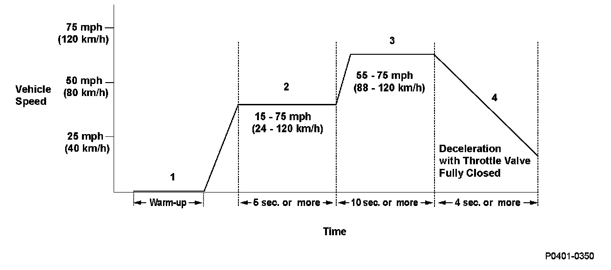

Advanced Diagnostics
DTC P0401: Exhaust Gas Recirculation (EGR) Insufficient Flow

General Description
The exhaust gas recirculation (EGR) valve, which is controlled by the powertrain control module (PCM), is opened and the exhaust gas flows from the exhaust manifold through the EGR valve and the intake manifold and the EGR passage, the exhaust gas is circulated into the air/fuel mixture and the mixture is drawn into the combustion chamber to lower combustion temperatures, thus reducing oxides of nitrogen (NOx) emissions.
The EGR flow is inspected as follows. The EGR valve is closed during deceleration with the throttle valve fully closed. Then the PCM fully opens the EGR valve. After a set time, the PCM computes the ratio of the present EGR flow to the normal EGR flow by monitoring the fluctuation of the intake manifold pressure between when the EGR valve is fully opened and when it is fully closed. If the EGR flow rate is lower than normal, a malfunction is detected and a DTC is stored.

Monitor Execution, Sequence, Duration, DTC Type, OBD Status

Enable Conditions

Malfunction Threshold
The ratio of the current EGR flow to the normal EGR flow is 15 % or less.
The difference between the MAP value before and after the Enable Conditions are met is no more than the values in the table. The change in pressure should occur for at least 3 seconds.
Confirmation Procedure with the HDS
Do the EGR TEST in the INSPECTION MENU with the HDS.

Driving Pattern
1. Start the engine. Hold the engine speed at 3,000 rpm without load (in Park or neutral) until the radiator fan comes on.
2. Drive the vehicle at a speed between 15 - 75 mph (24 - 120 km/h) for at least 5 seconds.
3. Then, drive at a steady speed between 55 - 75 mph (88 - 120 km/h) for at least 10 seconds.
4. Decelerate with the throttle valve fully closed for at least 4 seconds.
- Drive the vehicle in this manner only if the traffic regulations and ambient conditions allow.
Diagnosis Details
Conditions for illuminating the MIL
When a malfunction is detected during the first drive cycle, a Temporary DTC is stored in the PCM memory. If the malfunction recurs during the next (second) drive cycle, the MIL comes on and the DTC and the freeze frame data are stored.
Conditions for clearing the MIL
The MIL will be cleared if the malfunction does not recur during three consecutive trips in which the diagnostic runs.
The MIL, the DTC, the Temporary DTC, and the freeze frame data can be cleared by using the scan tool Clear command or by disconnecting the battery.